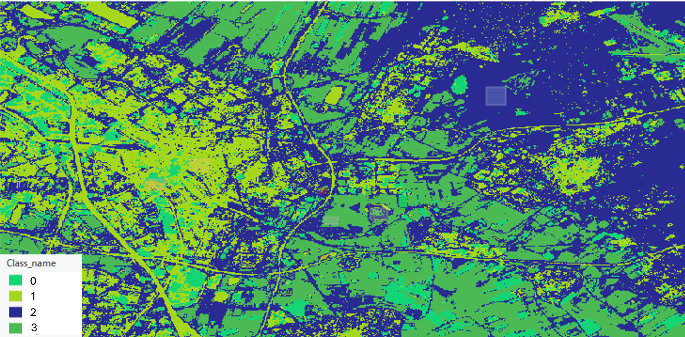
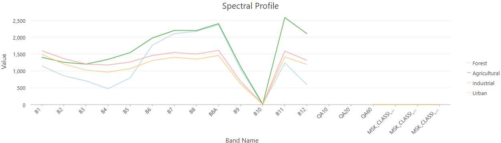

The purpose of this project is to produce an image classification of Utrecht. Through, this project I will look at different methods to classify spatial areas and determine what are their strengths and weakness. Through looking at image classification maps one can address the sustainable challenges around how are land use has an impacted our environment.
Before we can start this project we must understand what image classification is. Automated land cover classification is important because it is the task of extracting land use class information from multiband raster image. This process provides data to create thematic maps which can be useful for policy makers and urban planning.
There are two types of classifications: supervised and unsupervised. Supervised classification, classifies images by using the spectral signatures obtained from training samples. Whereas, unsupervised finds spectral classes (or clusters) in a multiband image without the analyst’s intervention.
The research objective is determine what are the strengths and weaknesses of using supervised, unsupervised or NDVI to classify land use. The has environmental or social significance because it can allow us to determine which is the best machine learning to classify land use. This can then help us understandhow are land use is impacting the natural environment. GIS methods are appropriate for this project because it can perform all three analytical techniques.
To conduct these 3 types of analysis I will be using ArcGIS pro. In ArcGIS pro I added my data, which was an image. Next, I created chart and added multiple spectral profile of the different land uses on my image. Then I made a training sample of my different land uses. Then using my training sample I configured the parameters. After this I usedthe Classification Wizard tool to make both a supervised and unsupervised classification map of my image. Finally, using the raster function I made an NDVI map of my image.
Unsupervised: The strength is that it is the easiest to make as it does not required training samples. The weaknesses is that it does not provided the specific type of land use, as the legend/scale was 0,1,2,3. This means that the colour that is allocated to an area is not linked to a land use. Another weakness is that it to some extent randomly allocates the colour scheme to areas with a similar colour, meaning that if from arial view two different land uses have the same colour it would be under the same class. For example, it allocated both the river and the highway in the same class. Though despite the random allocating it did separate city biuldings vs natural. The pattern seem to be that the natural landscape mostly surrounded the city.
Supervised: The strengths of this was that it used training samples, which meant that the class allocation to areas were more accurate. However, the weakness is that despite water, urban and natural areas begin clearly assigned, the program struggled differentiating wetland areas and fields/agricultural and forest. A unique insight was that there was a lot of wetland areas in Utrecht. (However, this might not be true due to weakness just mentioned)
NDVI: A strength of NDVI is that it is an easy map to make and it is easy to read. A weakness of this map is that it did not show enough of a colour difference between urban and natural landscape. This might be due to the impact of the river/water land use class. Though this map did provide insight that Utrecht is has a relatively high NDVI, meaning the vegetation is healthy.




I have learned about the different types of classification maps one could make. I also leaned how to make a supervised, unsupervised and NDVI map. Through making all three maps it helped me realised the strengths and drawbacks of using each one. Though from this project I feel that supervised classification is the best way to classify land use.
The limitation of this project was that I could not create a confusion matrix table. Despite me following the steps provided it did not work. The other limitations as mentioned above are the weakness of each of my maps.
For future improvements, I would make a supervised map but do more sample training attempts for each category. This would make the land use classification more accurate.